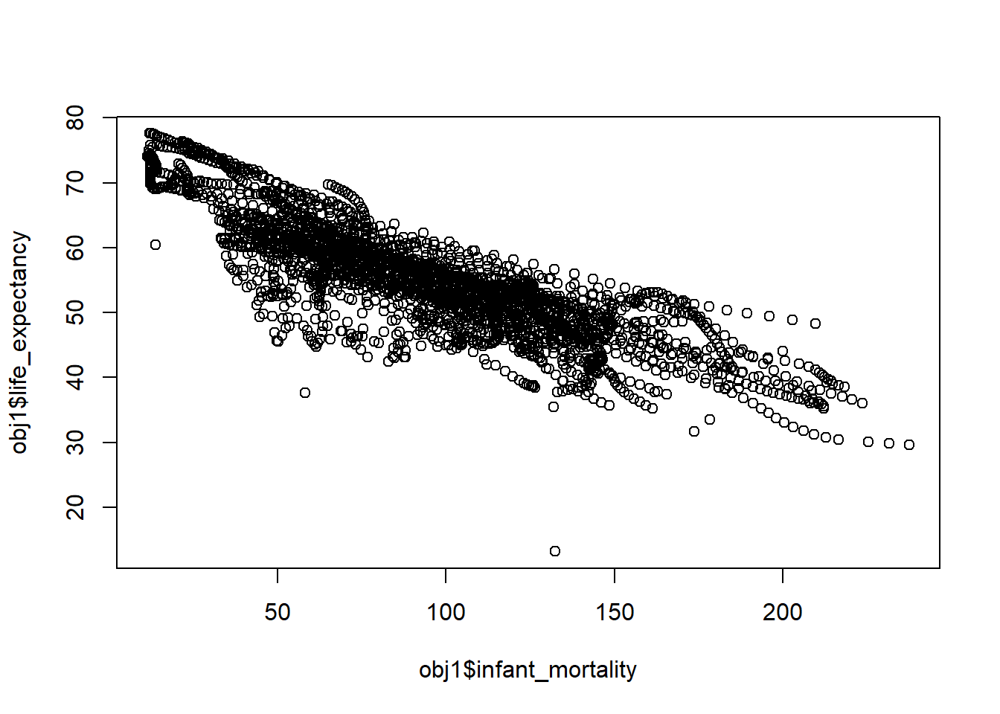
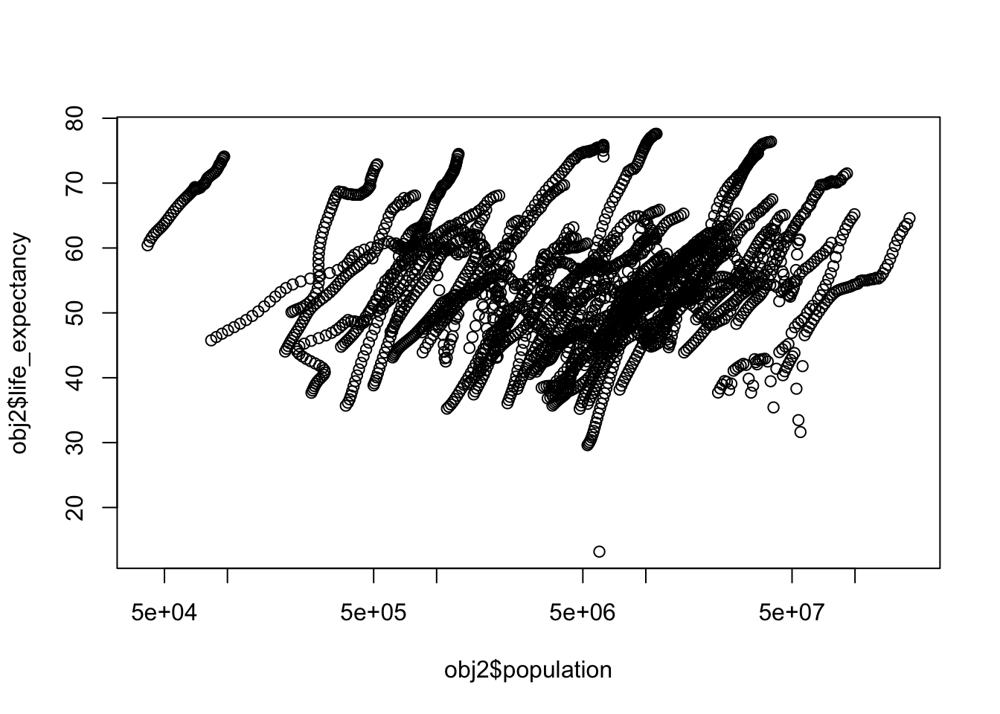
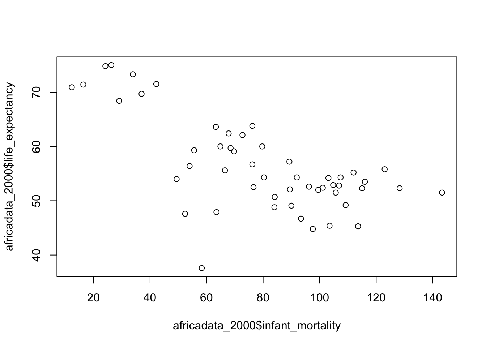
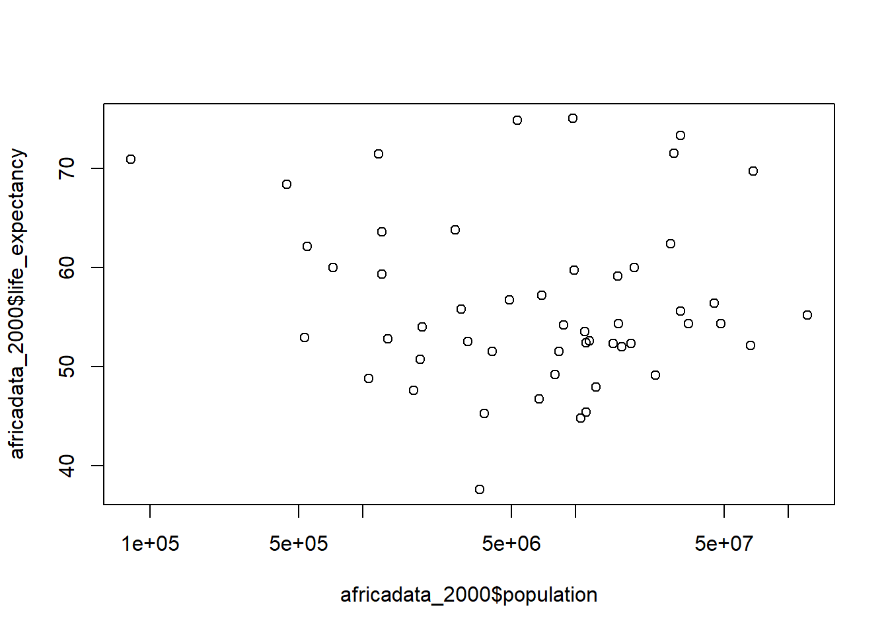
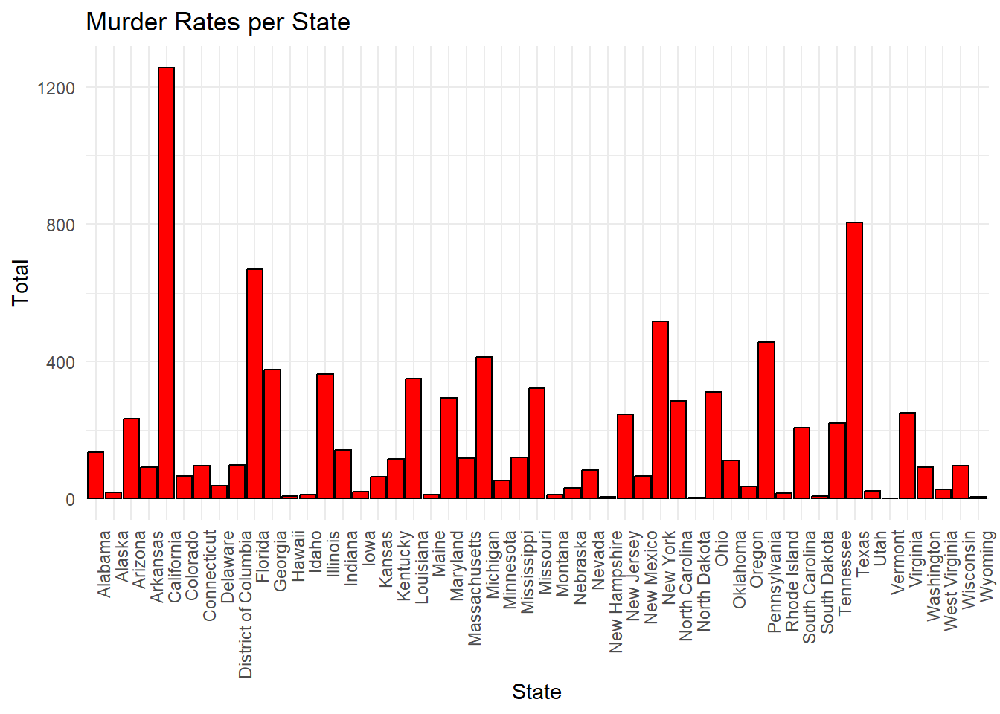
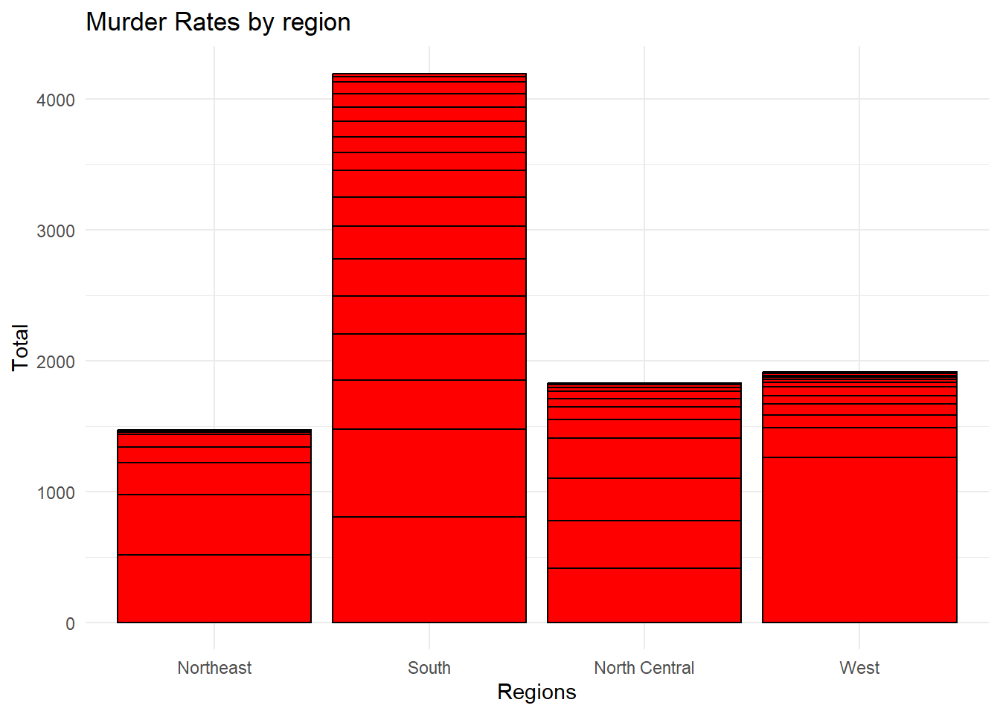

# load packages
library(dslabs) # contains data for analysisR Coding Exercise
Part 1
Setup
# look at help file for gapminder data
help(gapminder)starting httpd help server ... done# view data structure
str(gapminder)'data.frame': 10545 obs. of 9 variables:
$ country : Factor w/ 185 levels "Albania","Algeria",..: 1 2 3 4 5 6 7 8 9 10 ...
$ year : int 1960 1960 1960 1960 1960 1960 1960 1960 1960 1960 ...
$ infant_mortality: num 115.4 148.2 208 NA 59.9 ...
$ life_expectancy : num 62.9 47.5 36 63 65.4 ...
$ fertility : num 6.19 7.65 7.32 4.43 3.11 4.55 4.82 3.45 2.7 5.57 ...
$ population : num 1636054 11124892 5270844 54681 20619075 ...
$ gdp : num NA 1.38e+10 NA NA 1.08e+11 ...
$ continent : Factor w/ 5 levels "Africa","Americas",..: 4 1 1 2 2 3 2 5 4 3 ...
$ region : Factor w/ 22 levels "Australia and New Zealand",..: 19 11 10 2 15 21 2 1 22 21 ...# view data summary
summary(gapminder) country year infant_mortality life_expectancy
Albania : 57 Min. :1960 Min. : 1.50 Min. :13.20
Algeria : 57 1st Qu.:1974 1st Qu.: 16.00 1st Qu.:57.50
Angola : 57 Median :1988 Median : 41.50 Median :67.54
Antigua and Barbuda: 57 Mean :1988 Mean : 55.31 Mean :64.81
Argentina : 57 3rd Qu.:2002 3rd Qu.: 85.10 3rd Qu.:73.00
Armenia : 57 Max. :2016 Max. :276.90 Max. :83.90
(Other) :10203 NA's :1453
fertility population gdp continent
Min. :0.840 Min. :3.124e+04 Min. :4.040e+07 Africa :2907
1st Qu.:2.200 1st Qu.:1.333e+06 1st Qu.:1.846e+09 Americas:2052
Median :3.750 Median :5.009e+06 Median :7.794e+09 Asia :2679
Mean :4.084 Mean :2.701e+07 Mean :1.480e+11 Europe :2223
3rd Qu.:6.000 3rd Qu.:1.523e+07 3rd Qu.:5.540e+10 Oceania : 684
Max. :9.220 Max. :1.376e+09 Max. :1.174e+13
NA's :187 NA's :185 NA's :2972
region
Western Asia :1026
Eastern Africa : 912
Western Africa : 912
Caribbean : 741
South America : 684
Southern Europe: 684
(Other) :5586 # find data object type
class(gapminder)[1] "data.frame"gapminder is a dataframe object.
Data processing
# data containing only african countries
africadata <- gapminder |>
dplyr::filter(continent == "Africa")
# view data structure
str(africadata)'data.frame': 2907 obs. of 9 variables:
$ country : Factor w/ 185 levels "Albania","Algeria",..: 2 3 18 22 26 27 29 31 32 33 ...
$ year : int 1960 1960 1960 1960 1960 1960 1960 1960 1960 1960 ...
$ infant_mortality: num 148 208 187 116 161 ...
$ life_expectancy : num 47.5 36 38.3 50.3 35.2 ...
$ fertility : num 7.65 7.32 6.28 6.62 6.29 6.95 5.65 6.89 5.84 6.25 ...
$ population : num 11124892 5270844 2431620 524029 4829291 ...
$ gdp : num 1.38e+10 NA 6.22e+08 1.24e+08 5.97e+08 ...
$ continent : Factor w/ 5 levels "Africa","Americas",..: 1 1 1 1 1 1 1 1 1 1 ...
$ region : Factor w/ 22 levels "Australia and New Zealand",..: 11 10 20 17 20 5 10 20 10 10 ...# view data summary
summary(africadata) country year infant_mortality life_expectancy
Algeria : 57 Min. :1960 Min. : 11.40 Min. :13.20
Angola : 57 1st Qu.:1974 1st Qu.: 62.20 1st Qu.:48.23
Benin : 57 Median :1988 Median : 93.40 Median :53.98
Botswana : 57 Mean :1988 Mean : 95.12 Mean :54.38
Burkina Faso: 57 3rd Qu.:2002 3rd Qu.:124.70 3rd Qu.:60.10
Burundi : 57 Max. :2016 Max. :237.40 Max. :77.60
(Other) :2565 NA's :226
fertility population gdp continent
Min. :1.500 Min. : 41538 Min. :4.659e+07 Africa :2907
1st Qu.:5.160 1st Qu.: 1605232 1st Qu.:8.373e+08 Americas: 0
Median :6.160 Median : 5570982 Median :2.448e+09 Asia : 0
Mean :5.851 Mean : 12235961 Mean :9.346e+09 Europe : 0
3rd Qu.:6.860 3rd Qu.: 13888152 3rd Qu.:6.552e+09 Oceania : 0
Max. :8.450 Max. :182201962 Max. :1.935e+11
NA's :51 NA's :51 NA's :637
region
Eastern Africa :912
Western Africa :912
Middle Africa :456
Northern Africa :342
Southern Africa :285
Australia and New Zealand: 0
(Other) : 0 # object containing only infant_mortality and life_expectancy
obj1 <- africadata |>
dplyr::select(infant_mortality, life_expectancy)
# view obj1 structure
str(obj1)'data.frame': 2907 obs. of 2 variables:
$ infant_mortality: num 148 208 187 116 161 ...
$ life_expectancy : num 47.5 36 38.3 50.3 35.2 ...# view obj1 summary
summary(obj1) infant_mortality life_expectancy
Min. : 11.40 Min. :13.20
1st Qu.: 62.20 1st Qu.:48.23
Median : 93.40 Median :53.98
Mean : 95.12 Mean :54.38
3rd Qu.:124.70 3rd Qu.:60.10
Max. :237.40 Max. :77.60
NA's :226 # object containing only population and life_expectancy
obj2 <- africadata |>
dplyr::select(population, life_expectancy)
# view obj2 structure
str(obj2)'data.frame': 2907 obs. of 2 variables:
$ population : num 11124892 5270844 2431620 524029 4829291 ...
$ life_expectancy: num 47.5 36 38.3 50.3 35.2 ...# view obj2 summary
summary(obj2) population life_expectancy
Min. : 41538 Min. :13.20
1st Qu.: 1605232 1st Qu.:48.23
Median : 5570982 Median :53.98
Mean : 12235961 Mean :54.38
3rd Qu.: 13888152 3rd Qu.:60.10
Max. :182201962 Max. :77.60
NA's :51 Plotting
# plot life expectancy as a function of infant mortality
plot(obj1$infant_mortality, obj1$life_expectancy)
# plot life expectancy as a function of population
plot(obj2$population, obj2$life_expectancy, log = 'x')
The africadata object contains country-level data for different years from 1960 to 2016. The streaks seen in the second plot represent the same country changing over time.
More data processing
# filter data for years with missing infant mortality data
infant_na <- africadata |>
dplyr::filter(is.na(infant_mortality))
# print years with missing infant mortality data
unique(infant_na$year) [1] 1960 1961 1962 1963 1964 1965 1966 1967 1968 1969 1970 1971 1972 1973 1974
[16] 1975 1976 1977 1978 1979 1980 1981 2016# create object with data from 2000 only
africadata_2000 <- africadata |>
dplyr::filter(year == "2000")
# view data structure
str(africadata_2000)'data.frame': 51 obs. of 9 variables:
$ country : Factor w/ 185 levels "Albania","Algeria",..: 2 3 18 22 26 27 29 31 32 33 ...
$ year : int 2000 2000 2000 2000 2000 2000 2000 2000 2000 2000 ...
$ infant_mortality: num 33.9 128.3 89.3 52.4 96.2 ...
$ life_expectancy : num 73.3 52.3 57.2 47.6 52.6 46.7 54.3 68.4 45.3 51.5 ...
$ fertility : num 2.51 6.84 5.98 3.41 6.59 7.06 5.62 3.7 5.45 7.35 ...
$ population : num 31183658 15058638 6949366 1736579 11607944 ...
$ gdp : num 5.48e+10 9.13e+09 2.25e+09 5.63e+09 2.61e+09 ...
$ continent : Factor w/ 5 levels "Africa","Americas",..: 1 1 1 1 1 1 1 1 1 1 ...
$ region : Factor w/ 22 levels "Australia and New Zealand",..: 11 10 20 17 20 5 10 20 10 10 ...# view data summary
summary(africadata_2000) country year infant_mortality life_expectancy
Algeria : 1 Min. :2000 Min. : 12.30 Min. :37.60
Angola : 1 1st Qu.:2000 1st Qu.: 60.80 1st Qu.:51.75
Benin : 1 Median :2000 Median : 80.30 Median :54.30
Botswana : 1 Mean :2000 Mean : 78.93 Mean :56.36
Burkina Faso: 1 3rd Qu.:2000 3rd Qu.:103.30 3rd Qu.:60.00
Burundi : 1 Max. :2000 Max. :143.30 Max. :75.00
(Other) :45
fertility population gdp continent
Min. :1.990 Min. : 81154 Min. :2.019e+08 Africa :51
1st Qu.:4.150 1st Qu.: 2304687 1st Qu.:1.274e+09 Americas: 0
Median :5.550 Median : 8799165 Median :3.238e+09 Asia : 0
Mean :5.156 Mean : 15659800 Mean :1.155e+10 Europe : 0
3rd Qu.:5.960 3rd Qu.: 17391242 3rd Qu.:8.654e+09 Oceania : 0
Max. :7.730 Max. :122876723 Max. :1.329e+11
region
Eastern Africa :16
Western Africa :16
Middle Africa : 8
Northern Africa : 6
Southern Africa : 5
Australia and New Zealand: 0
(Other) : 0 More plotting
# plot life expectancy as a function of infant mortality
plot(africadata_2000$infant_mortality, africadata_2000$life_expectancy)
# plot life expectancy as a function of population
plot(africadata_2000$population, africadata_2000$life_expectancy, log = 'x')
Model fits
# linear regression of infant mortality as predictor of life expectancy
fit1 <- lm(life_expectancy ~ infant_mortality, data = africadata_2000)
# print summary of fit1
summary(fit1)
Call:
lm(formula = life_expectancy ~ infant_mortality, data = africadata_2000)
Residuals:
Min 1Q Median 3Q Max
-22.6651 -3.7087 0.9914 4.0408 8.6817
Coefficients:
Estimate Std. Error t value Pr(>|t|)
(Intercept) 71.29331 2.42611 29.386 < 2e-16 ***
infant_mortality -0.18916 0.02869 -6.594 2.83e-08 ***
---
Signif. codes: 0 '***' 0.001 '**' 0.01 '*' 0.05 '.' 0.1 ' ' 1
Residual standard error: 6.221 on 49 degrees of freedom
Multiple R-squared: 0.4701, Adjusted R-squared: 0.4593
F-statistic: 43.48 on 1 and 49 DF, p-value: 2.826e-08# linear regression of population as predictor of life expectancy
fit2 <- lm(life_expectancy ~ population, data = africadata_2000)
# print summary of fit2
summary(fit2)
Call:
lm(formula = life_expectancy ~ population, data = africadata_2000)
Residuals:
Min 1Q Median 3Q Max
-18.429 -4.602 -2.568 3.800 18.802
Coefficients:
Estimate Std. Error t value Pr(>|t|)
(Intercept) 5.593e+01 1.468e+00 38.097 <2e-16 ***
population 2.756e-08 5.459e-08 0.505 0.616
---
Signif. codes: 0 '***' 0.001 '**' 0.01 '*' 0.05 '.' 0.1 ' ' 1
Residual standard error: 8.524 on 49 degrees of freedom
Multiple R-squared: 0.005176, Adjusted R-squared: -0.01513
F-statistic: 0.2549 on 1 and 49 DF, p-value: 0.6159The coefficient estimate of infant_mortality as a predictor of life_expectancy is \(-0.189\) with a p-value of \(<0.001\). There is evidence to suggest a statistically significant negative association between infant mortality and life expectancy.
The coefficient estimate of population as a predictor of life_expectancy is \(2.756*10^{-8}\) with a p-value of \(0.616\). There is insufficient evidence to suggest an association between population size and life expectancy.
Part 2
This section contributed by Murtaza Yaqubi.
Install and library packages.
library(dslabs)
library(tidyverse)── Attaching core tidyverse packages ──────────────────────── tidyverse 2.0.0 ──
✔ dplyr 1.1.4 ✔ readr 2.1.5
✔ forcats 1.0.0 ✔ stringr 1.5.1
✔ ggplot2 3.5.1 ✔ tibble 3.2.1
✔ lubridate 1.9.4 ✔ tidyr 1.3.1
✔ purrr 1.0.2
── Conflicts ────────────────────────────────────────── tidyverse_conflicts() ──
✖ dplyr::filter() masks stats::filter()
✖ dplyr::lag() masks stats::lag()
ℹ Use the conflicted package (<http://conflicted.r-lib.org/>) to force all conflicts to become errorslibrary(dplyr)#loading and setting up the data.
#view the help page of the data set to better understand the dataset.
help("murders")
#check the data.
head(murders) state abb region population total
1 Alabama AL South 4779736 135
2 Alaska AK West 710231 19
3 Arizona AZ West 6392017 232
4 Arkansas AR South 2915918 93
5 California CA West 37253956 1257
6 Colorado CO West 5029196 65#view the structure of the data.
str(murders)'data.frame': 51 obs. of 5 variables:
$ state : chr "Alabama" "Alaska" "Arizona" "Arkansas" ...
$ abb : chr "AL" "AK" "AZ" "AR" ...
$ region : Factor w/ 4 levels "Northeast","South",..: 2 4 4 2 4 4 1 2 2 2 ...
$ population: num 4779736 710231 6392017 2915918 37253956 ...
$ total : num 135 19 232 93 1257 ...#view the summary of the data.
summary(murders) state abb region population
Length:51 Length:51 Northeast : 9 Min. : 563626
Class :character Class :character South :17 1st Qu.: 1696962
Mode :character Mode :character North Central:12 Median : 4339367
West :13 Mean : 6075769
3rd Qu.: 6636084
Max. :37253956
total
Min. : 2.0
1st Qu.: 24.5
Median : 97.0
Mean : 184.4
3rd Qu.: 268.0
Max. :1257.0 #view class of the data.
class(murders)[1] "data.frame"#create an object ans assign murders to it.
Dataset_mur <- murders#Processing data.
#Isolated the variables of interest using select function and then rearranged the order of total to descending.
df1 <- Dataset_mur %>%
select("state", "region", "population", "total") %>%
arrange(desc(total))
#view the newly created dataset.
print(df1) state region population total
1 California West 37253956 1257
2 Texas South 25145561 805
3 Florida South 19687653 669
4 New York Northeast 19378102 517
5 Pennsylvania Northeast 12702379 457
6 Michigan North Central 9883640 413
7 Georgia South 9920000 376
8 Illinois North Central 12830632 364
9 Louisiana South 4533372 351
10 Missouri North Central 5988927 321
11 Ohio North Central 11536504 310
12 Maryland South 5773552 293
13 North Carolina South 9535483 286
14 Virginia South 8001024 250
15 New Jersey Northeast 8791894 246
16 Arizona West 6392017 232
17 Tennessee South 6346105 219
18 South Carolina South 4625364 207
19 Indiana North Central 6483802 142
20 Alabama South 4779736 135
21 Mississippi South 2967297 120
22 Massachusetts Northeast 6547629 118
23 Kentucky South 4339367 116
24 Oklahoma South 3751351 111
25 District of Columbia South 601723 99
26 Connecticut Northeast 3574097 97
27 Wisconsin North Central 5686986 97
28 Arkansas South 2915918 93
29 Washington West 6724540 93
30 Nevada West 2700551 84
31 New Mexico West 2059179 67
32 Colorado West 5029196 65
33 Kansas North Central 2853118 63
34 Minnesota North Central 5303925 53
35 Delaware South 897934 38
36 Oregon West 3831074 36
37 Nebraska North Central 1826341 32
38 West Virginia South 1852994 27
39 Utah West 2763885 22
40 Iowa North Central 3046355 21
41 Alaska West 710231 19
42 Rhode Island Northeast 1052567 16
43 Idaho West 1567582 12
44 Montana West 989415 12
45 Maine Northeast 1328361 11
46 South Dakota North Central 814180 8
47 Hawaii West 1360301 7
48 New Hampshire Northeast 1316470 5
49 Wyoming West 563626 5
50 North Dakota North Central 672591 4
51 Vermont Northeast 625741 2View the top ten states with the highest murder rate in 2010.
top_ten <- df1 %>%
slice_max(total, n=10) %>% #the ten highest observations in the total column.
select(!"region") #We do not need to look at the regions at this moment.
print(top_ten) #view the dataset. state population total
1 California 37253956 1257
2 Texas 25145561 805
3 Florida 19687653 669
4 New York 19378102 517
5 Pennsylvania 12702379 457
6 Michigan 9883640 413
7 Georgia 9920000 376
8 Illinois 12830632 364
9 Louisiana 4533372 351
10 Missouri 5988927 321California ranked number one on the top ten list of states with the highest murder rates in 2010.
View the bottom ten states in regard to murder rate in 2010.
bottom_ten <- df1 %>%
select(!"region") %>%
slice_min(total, n=10) %>% #slice_min helps slice the bottom 10 observations of the "total" variable.
arrange(desc(total))
#view the dataset.
print(bottom_ten) state population total
1 Rhode Island 1052567 16
2 Idaho 1567582 12
3 Montana 989415 12
4 Maine 1328361 11
5 South Dakota 814180 8
6 Hawaii 1360301 7
7 New Hampshire 1316470 5
8 Wyoming 563626 5
9 North Dakota 672591 4
10 Vermont 625741 2Vermont was the state with the lowest murder rates in 2010.
Let’s investigate further by comparing murder rates by the region.
#create a dataset for region and total columns.
region <- df1 %>%
select(region, total)
#view the dataset.
print(region) region total
1 West 1257
2 South 805
3 South 669
4 Northeast 517
5 Northeast 457
6 North Central 413
7 South 376
8 North Central 364
9 South 351
10 North Central 321
11 North Central 310
12 South 293
13 South 286
14 South 250
15 Northeast 246
16 West 232
17 South 219
18 South 207
19 North Central 142
20 South 135
21 South 120
22 Northeast 118
23 South 116
24 South 111
25 South 99
26 Northeast 97
27 North Central 97
28 South 93
29 West 93
30 West 84
31 West 67
32 West 65
33 North Central 63
34 North Central 53
35 South 38
36 West 36
37 North Central 32
38 South 27
39 West 22
40 North Central 21
41 West 19
42 Northeast 16
43 West 12
44 West 12
45 Northeast 11
46 North Central 8
47 West 7
48 Northeast 5
49 West 5
50 North Central 4
51 Northeast 2#calculate murder rates in the Western region of the U.S.
west <- region %>%
filter(region == "West")
#Sum of murders in the Western region of the U.S.
sum(west$total)[1] 1911#calculate murder rates in the Northestern region of the U.S.
nor_east <- region %>%
filter(region == "Northeast")
#Sum of murders in this region of the U.S.
sum(nor_east$total)[1] 1469#calculate murder rates in the North Central region of the U.S.
nor_cen <- region %>%
filter(region == "North Central")
#Sum of murders in this region of the U.S.
sum(nor_cen$total)[1] 1828#calculate murder rates in the Southern region of the U.S.
south <- region %>%
filter(region == "South")
#Sum of murders in this region of the U.S.
sum(south$total)[1] 4195#Plotting:
#Generate a barplot with state as a function of murder rates.
pt1 <- df1 %>%
ggplot(aes(x = state, y = total)) +
geom_col(fill = "red", color = "black") + labs(title = "Murder Rates per State", x = "State", y = "Total") + theme_minimal() + theme(axis.text.x = element_text(angle = 90, hjust = 1))
#Generae the plot.
plot(pt1)
California, Texas and Florida had the higest murder rates in the U.S.
Let’s plot regions as a function of murder rates.
#Generate a barplot with regions as a function of murder rates.
pt2 <- df1 %>%
ggplot(aes(x = region, y = total)) +
geom_col(fill = "red", color = "black") + labs(title = "Murder Rates by region", x = "Regions", y = "Total") + theme_minimal()
#Generate the plot
plot(pt2)
Southern region of the U.S withnessed the greatest number of murders in 2010.
Let’s plot population as a function of murder rates in a scatterplot.
#scatterplot with a liner regression line.
pt3 <- df1 %>%
ggplot(aes(x = population, y = total)) +
geom_point(color = "black", fill = "green", shape = 21, size = 3) +
geom_smooth(method = "lm", color = "blue", se = TRUE) + # Linear trend line
scale_x_log10() + # Scale the x-axis to log10
labs(title = "Scatter Plot: Log of Population vs. Total", x = "Log(Population)", y = "Total") + #use labs function to add titles and labels.
theme_minimal()
#generate the plot.
plot(pt3)`geom_smooth()` using formula = 'y ~ x'
There is a strong positive correlation between population and murder rates.
Model fit.
#Fit model with murder rates as an outcome and population as a predictor.
model <- lm(total ~ population, data = df1)
#view summary of the model.
summary(model)
Call:
lm(formula = total ~ population, data = df1)
Residuals:
Min 1Q Median 3Q Max
-112.889 -25.656 -3.687 25.505 217.780
Coefficients:
Estimate Std. Error t value Pr(>|t|)
(Intercept) -1.713e+01 1.198e+01 -1.43 0.159
population 3.316e-05 1.315e-06 25.23 <2e-16 ***
---
Signif. codes: 0 '***' 0.001 '**' 0.01 '*' 0.05 '.' 0.1 ' ' 1
Residual standard error: 63.77 on 49 degrees of freedom
Multiple R-squared: 0.9285, Adjusted R-squared: 0.9271
F-statistic: 636.5 on 1 and 49 DF, p-value: < 2.2e-16The result of the fit model suggests that there is a positive association between population and murder rate. The coeeficiant estimate for population is a positive number and the p-value <0.01 which suggest that the result is statistically significant. The interpretaion of the result is that with increasing population, murder rates increase.